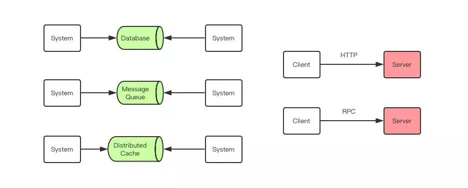
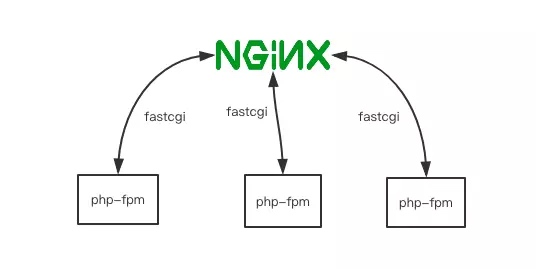
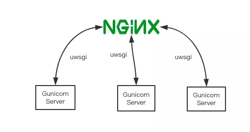
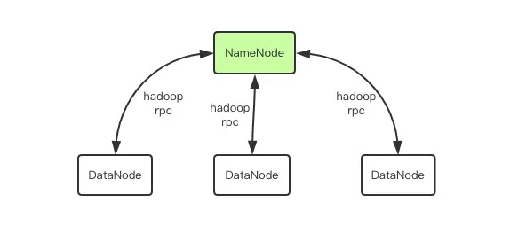
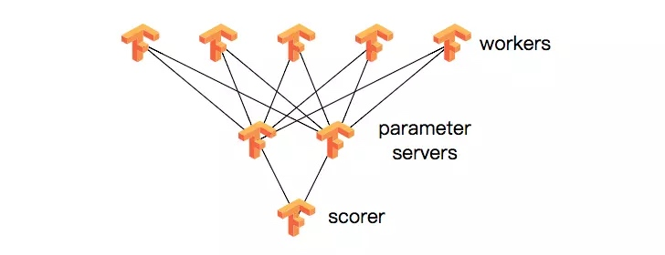
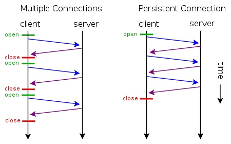
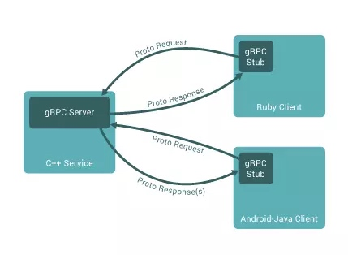
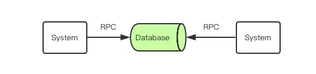
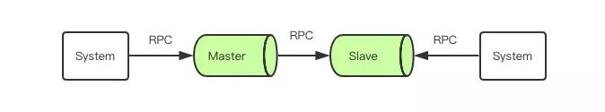

开篇：RPC 要解决的核心问题和在企业服务中的地位
https://juejin.im/book/5af56a3c518825426642e004/section/5af56a3c5188254267261e03
随着企业 IT 服务的不断发展，单台服务器逐渐无法承受用户日益增长的请求压力时，就需要多台服务器联合起来构成「服务集群」共同对外提供服务。同时业务服务会随着产品需求的增多越来越肿，架构上必须进行服务拆分，一个完整的大型服务会被打散成很多很多独立的小服务，每个小服务会由独立的进程去管理来对外提供服务，这就是「微服务」。
当用户的请求到来时，我们需要将用户的请求分散到多个服务去各自处理，然后又需要将这些子服务的结果汇总起来呈现给用户。那么服务之间该使用何种方式进行交互就是需要解决的核心问题。RPC 就是为解决服务之间信息交互而发明和存在的。
什么是 RPC ？
RPC (Remote Procedure Call) 即远程过程调用，是分布式系统常见的一种通信方法，已经有 40 多年历史。当两个物理分离的子系统需要建立逻辑上的关联时，RPC 是牵线搭桥的常见技术手段之一。除 RPC 之外，常见的多系统数据交互方案还有分布式消息队列、HTTP 请求调用、数据库和分布式缓存等。

其中 RPC 和 HTTP 调用是没有经过中间件的，它们是端到端系统的直接数据交互。HTTP 调用其实也可以看成是一种特殊的 RPC，只不过传统意义上的 RPC 是指长连接数据交互，而 HTTP 一般是指即用即走的短链接。
RPC 在我们熟知的各种中间件中都有它的身影。Nginx/Redis/MySQL/Dubbo/Hadoop/Spark/Tensorflow 等重量级开源产品都是在 RPC 技术的基础上构建出来的，我们这里说的 RPC 指的是广义的 RPC，也就是分布式系统的通信技术。RPC 在技术中的地位好比我们身边的空气，它无处不在，但是又有很多人根本不知道它的存在。
Nginx 与 RPC
Ngnix 是互联网企业使用最为广泛的代理服务器。它可以为后端分布式服务提供负载均衡的功能，它可以将后端多个服务地址聚合为单个地址来对外提供服务。如图，Django 是 Python 技术栈最流行的 Web 框架。

Nginx 和后端服务之间的交互在本质上也可以理解为 RPC 数据交互。也许你会争辩说 Nginx 和后端服务之间使用的是 HTTP 协议，走的是短连接，严格上不能算是 RPC 调用。

你说的没错，不过 Nginx 和后端服务之间还可以走其它的协议，比如 uwsgi 协议、fastcgi 协议等，这两个协议都是通过长连接进行通信的，通信协议也是采用了比 HTTP 协议更加节省流量的二进制协议。如上图所示，Gunicorn 是著名的 Python 容器，使用它可以启动 uwsgi 协议的服务器对外提供服务。
uwsgi 通讯协议在 Python 语言体系里使用非常普遍，如果一个企业内部使用 Python 语言栈搭建 Web 服务，那么他们在生产环境部署 Python 应用的时候不是在使用 HTTP 协议就是在使用 uwsgi 协议来和 Nginx 之间建立通讯。
Fastcgi 协议在 PHP 语言体系里非常常见，Nginx 和 PHP-fpm 进程之间一般较常使用 Fastcgi 协议进行通讯。
Hadoop 与 RPC
在大数据技术领域，RPC 也占据了非常重要的地位。大数据领域广泛应用了非常多的分布式技术，分布式意味着节点的物理隔离，隔离意味着需要通信，通信意味着 RPC 的存在。大数据需要通信的量比业务系统更加庞大，所以在数据通信优化上做的更深。

比如最常见的 Hadoop 文件系统 hdfs，一般包括一个 NameNode 和多个 DataNode，NameNode 和 DataNode 之间就是通过一种称为 Hadoop RPC 的二进制协议进行通讯。
TensorFlow 与 RPC
在人工智能领域的 RPC 也很重要，著名的 TensorFlow 架如果需要处理上亿的数据，就需要依靠分布式计算力，需要集群化，当多个分布式节点需要集体智慧时，就必须引入 RPC 技术进行通讯。Tensorflow Cluster 的 RPC 通讯框架使用了 Google 内部自研的 gRPC 框架。

HTTP 调用其实也是一种特殊的 RPC
HTTP1.0 协议时，HTTP 调用还只能是短链接调用，一个请求来回之后连接就会关闭。HTTP1.1 在 HTTP1.0 协议的基础上进行了改进，引入了 KeepAlive 特性可以保持 HTTP 连接长时间不断开，以便在同一个连接之上进行多次连续的请求，进一步拉近了 HTTP 和 RPC 之间的距离。

当 HTTP 协议进化到 2.0 之后，Google 开源了一个建立在 HTTP2.0 协议之上的通信框架直接取名为 gRPC，也就是 Google RPC，这时 HTTP 和 RPC 之间已经没有非常明显的界限了。所以在后文我们不再明确强调 RPC 和 HTTP 请求调用之间的细微区别了，直接统一称之为 RPC。

HTTP VS RPC （普通话 VS 方言）
HTTP 与 RPC 的关系就好比普通话与方言的关系。要进行跨企业服务调用时，往往都是通过 HTTP API，也就是普通话，虽然效率不高，但是通用，没有太多沟通的学习成本。但是在企业内部还是 RPC 更加高效，同一个企业公用一套方言进行高效率的交流，要比通用的 HTTP 协议来交流更加节省资源。整个中国有非常多的方言，正如有很多的企业内部服务各有自己的一套交互协议一样。虽然国家一直在提倡使用普通话交流，但是这么多年过去了，你回一趟家乡探个亲什么的就会发现身边的人还是流行说方言。
如果再深入一点说，普通话本质上也是一种方言，只不过它是官方的方言，使用最为广泛的方言，相比而言其它方言都是小语种，小语种之中也会有几个使用比较广泛比较特色的方言占比也会比较大。这就好比开源 RPC 协议中 Protobuf 和 Thrift 一样，它们两应该是 RPC 协议中使用最为广泛的两个。
RPC 与分布式系统交互方案
如果两个子系统没有在网络上进行分离，而是运行在同一个操作系统实例之上的两个进程时，它们之间的通信手段还可以更加丰富。除了以上提到的几种分布式解决方案之外，还有共享内存、信号量、文件系统、内核消息队列、管道等，本质上都是通过操作系统内核机制来进行数据和消息的交互而无须经过网络协议栈。
但在现代企业服务中，这种单机应用已经非常少见了，因为单机应用意味着单点故障 —— “一人摔跤全家跌倒”。业务子系统往往都需要经物理网络栈进行隔离，因此分布式解决方案在要求高可用无间断服务的企业环境里便大有作为，这也让 RPC 迎来自己大放异彩的时代。
前文提到的分布式子系统交互方案，除了 RPC 技术之外还有数据库、消息队列和缓存。但其实这三者本质上是 RPC 技术的一个应用组合。我们可以将数据库服务理解为下面这张图：

可以看出，子系统和数据库之间的交互也是通过 RPC 进行的，只不过这里是三个子系统之间复杂的组合消息交互罢了。如果再深入进去，你会发现，这里的数据库不是那种单机数据库，而是具备主从复制功能的数据库，比如 MySQL。在互联网企业里一般都会使用这种主从读写分离的数据库。一个业务子系统将数据写往主库，主库再将数据同步到从库，然后另一个业务子系统又从库里将数据取出来。这时又可以进一步将它们看成是四个子系统之间进行的更加复杂的 RPC 数据交互。

小结
现在，读者应该可以深刻理解 RPC 在互联网企业技术中的重要地位。从技术复杂性角度，也应该可以明白为什么说对 RPC 技术的理解水平是评判一个程序员是不是高级程序员的重要标准之一。
在下一节，我们将对 RPC 的交互原理进行深入的学习，先把地基打牢，再开始实战开发。
思考题
请读者思考一下，在平时的后端开发中，还有哪些地方用到了「类 RPC」技术？
Copyright © 2015 Powered by MWeb, Theme used GitHub CSS.